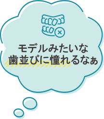
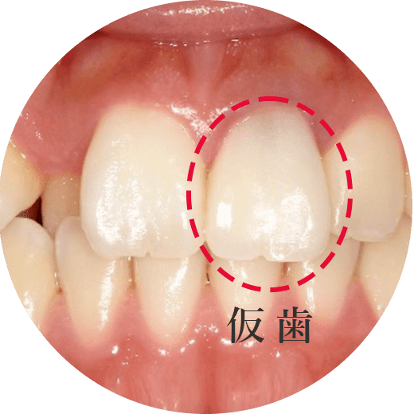
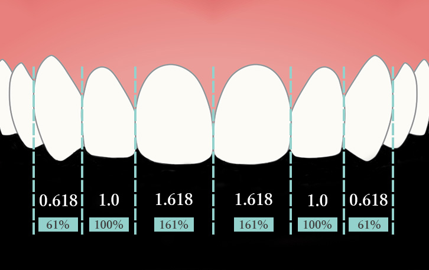

Monitor price毎月先着3名様限定!
モニター価格でご提供
-
セラミッククラウン4本
通常価格¥440,000(税込)
モニター価格
(税込)
-
セラミッククラウン6本
通常価格¥660,000(税込)
モニター価格
(税込)
※月頭から3名募集のため、モニター希望の方はできる限り早めにお越しください。
※モニターには審査がございます。
詳細はお電話や無料カウンセリングでおたずねください。
※別途仮歯・治療代がかかります。
モニターを受けていただきたい方
-
明るく、楽しく、前向きに
セラミック矯正治療を行いたい方 -
治療前・治療中・治療後の写真や
クチコミをSNSに投稿してくれる方 -
モニターに該当するかは、
お電話や無料カウンセリングで
判断させていただきます
-
- 
そんなお悩みをお持ちの方には
セラミック矯正治療が
おすすめです！
セラミック矯正治療は、歯を少し削って、
"白いセラミックを被せる"治療法
"矯正治療"よりも"短期間で安価"に、
白く美しい歯並びを手に入れることができます。
矯正治療とセラミック矯正の違い
- セラミック矯正
-
10日～1ヶ月 4万～50万円 虫歯リスクが低い
- 矯正治療
-
2年～3年 80万～100万円 虫歯のリスクがある
| 10日～1ヶ月 | 2年～3年 |
| 4万～50万円 | 80万～100万円 |
| 虫歯リスクが低い | 虫歯のリスクがある |
- こんな方にセラミック矯正はピッタリですCeramic treatment
-
Featureセラミック矯正治療の特徴
-
自然でキレイな
白い歯が手に入る -
劣化が少なく
長期間キレイをキープ -
虫歯リスク
歯周病リスクが小さい -
コンプレックスが
解消できる -
金属アレルギーの
心配がない -
矯正治療より早く
安価に治療できる
Reason医療法人社団ルーブル歯科・矯正歯科が
選ばれる理由
Reason01
矯正医が手がける
お顔全体と歯の調和、噛み合わせ、
スマイルバランスを考えた治療
-
綺麗なスマイルライン
Eラインにしたい - 口ゴボ・Eライン
-
笑うと歯茎が
見えすぎてしまう - ガミースマイル
-
歯と口角の間の
影が気になる - バッカルコリドー
Reason02
日本審美歯科学会所属で研鑽を積んだ
院長による歯と唇の黄金比を考えた治療を
矯正も踏まえてご提案
Reason03
矯正とあわせて治療できるため
歯や神経を抜かずに治療ができます
他院の矯正引き継ぎからの審美治療も可能
Reason04
3Dスキャンで治療後の笑顔の
イメージがわかる当日シミュレーション

Reason05
光の反射やグラデーション・
細部までこだわったデザインを
セラミック専門技工士が作ります
Reason06
矯正治療よりも早くリーズナブルに
白く整った歯並びが手に入ります
気になるお悩みはお気軽にご相談ください
Case症例紹介
すきっ歯のお悩み
- Before
-
 After
After
詳細はこちら
- 施術名
-
上顎前歯6本セラミッククラウン
下顎マウスピース矯正
- 施術の説明
-
すきっ歯が気になり、矯正治療とセラミック治療を提案し、上顎に関しては歯が小さく矯正治療をしても前歯の噛み合わせが上手に作れないため、歯の大きさを整えるためにもセラミックでの矯正を希望。下顎はマウスピース矯正をそれぞれ希望。
歯の色味、白さ、形が思い通りにすることが可能で天然の歯のような美しい仕上がりに。治療中は歯を削ったときに仮歯を装着するので歯並びを仮歯の状態で一度確認することができます。ワイヤー矯正が平均2年以上かかるのに対し、セラミック矯正は数カ月で短期に歯並びを整えるのに最適な治療法です。また金属不使用なため金属アレルギーの方でも対応可能。
- 施術の副作用（リスク）
-
【歯を削らないとならない】
セラミック単独での歯並びの改善は歯の状態によっては神経の治療が必要になったり、抜歯をする場合もあります。
【随伴症状】
冷水痛、咬合痛、術後疼痛、仮歯の脱離、セラミックの破折 等
- 施術の価格
- 矯正費用＋66万
矯正治療中の歯を綺麗に治したい
- Before
- After
詳細はこちら
- 施術名
- 上顎前歯4本セラミッククラウン＋引継矯正治療
- 施術の説明
-
他院で矯正治療途中に不信感を感じで当院へセカンドオピニオンでご来院され、矯正治療の引き継ぎと前歯が仮歯だったため矯正治療後に上顎前歯4本のセラミック治療を希望。
歯の色味、白さ、形が思い通りにすることが可能で天然の歯のような美しい仕上がりに。治療中は歯を削ったときに仮歯を装着するので歯並びを仮歯の状態で一度確認することができます。ワイヤー矯正が平均2年以上かかるのに対し、セラミック矯正は数カ月で短期に歯並びを整えるのに最適な治療法です。また金属不使用なため金属アレルギーの方でも対応可能。
- 施術の副作用（リスク）
-
【歯を削らないとならない】
セラミック単独での歯並びの改善は歯の状態によっては神経の治療が必要になったり、抜歯をする場合もあります。
【随伴症状】
冷水痛、咬合痛、術後疼痛、仮歯の脱離、セラミックの破折 等
- 施術の価格
- 矯正費用＋44万
Flowセラミック矯正治療の流れ
カウンセリングと
精密検査を行います。
- 検査内容
-
- 口腔内写真撮影
- CT撮影（ご契約の場合のみ）
- レントゲン写真撮影
- 噛み合わせ診断
″即日白い仮歯のセット″も可能です！
歯型の採取と
製作した
仮歯をセットします。

仮歯の状態確認と
最終の歯型採取を
行います。
完成したセラミックの歯を
セットします。
※お口の状態や治療本数によって治療回数は異なります
※お口の状態や治療本数によって治療回数は異なります
Q&Aよくあるご質問について
- Q1前歯が大きくて気になります。治せますか？
-
A

セラミック矯正治療であれば、気になる前歯の大きさも改善することができます。
当院には矯正医が在籍しておりますので、お顔全体や周りの歯との調和・スマイルバランス・歯の黄金比などを考慮した治療のご提案が可能です。
- Q2セラミックが欠けた場合、保証はありますか？
-
A

割れたり、折れてしまった場合、2年間の保証期間を設けております。(1年以内0％、1年以降50％保証。ジルコニア5年保証・ラミネートべニア1年保証)
- Q3セラミック矯正と矯正治療で悩んでいます。詳しくお話を聞くことはできますか？
-
A
当院には矯正医も在籍しておりますので、患者様のご要望やお口の状態に合わせて最適な方法をご提案いたします。セラミック矯正と矯正治療を組み合わせた治療も可能ですので、一度ご相談ください。
- Q4芸能人のような白い歯にすることはできますか？
-
A
可能です。事前のカウンセリングで患者様が理想とされる白さをお選びいただけます。
- Q5治療したセラミックはどのくらい期間もつのでしょうか？
-
A
虫歯や歯周病にならない限りずっと使用することができます。しかし、噛み合わせや歯ぎしりなどにより割れる可能性もありますので、定期的なチェックにいらっしゃることをおすすめします。
Point医療法人社団ルーブル歯科・矯正歯科の
安心して通えるポイント
-
Point 01新宿駅徒歩1分
土日診療
-
Point 02洗礼された空間と
徹底した衛生管理
-
Point 03わかりやすい説明で
納得の治療
-
Point 04リーズナブルな治療費
明瞭会計だから安心
-
Point 05充実の保証制度*で
治療後も安心
-
*割れた・折れた場合の保証期間2年
(1年以内0％、1年以降50％保証。ジルコニア5年保証・ラミネートべニア1年保証)
Price料金表
毎月先着3名様限定!
モニター価格でご提供
-
セラミッククラウン4本
通常価格¥440,000(税込)
モニター価格
(税込)
-
セラミッククラウン6本
通常価格¥660,000(税込)
モニター価格
(税込)
※月頭から3名募集のため、モニター希望の方はできる限り早めにお越しください。
※モニターには審査がございます。
詳細はお電話や無料カウンセリングでおたずねください。
※別途仮歯・治療代がかかります。
デンタルローンで分割支払が可能ですSplit payment
アプラスのデンタルローン
セラミッククラウン極
4歯モニター価格の場合
合計¥275,000(税込)
※100分割支払いの場合
セラミッククラウン極
1歯モニター価格の場合
合計¥68,750(税込)
 ※24分割支払いの場合
※24分割支払いの場合
詰め物(インレー)
- ハイブリッドセラミック
インレー -
1歯 ( 税込 )
- e-maxインレー
-
1歯 ( 税込 )
- ジルコニアインレー
-
1歯 ( 税込 )
被せ物(クラウン)
- フルジルコニアクラウン
-
1歯 ( 税込 )
- セラミッククラウン極
-
1歯 ( 税込 )
- セラミッククラウン極上
-
1歯 ( 税込 )
- ラミネートベニア
-
1歯 ( 税込 )
※保険適応外の自由診療となります。
Paymentお支払いについて
Doctor患者様の笑顔をゴールに
安心の診療で
お口のお悩みを解決します
渋谷ルーブル歯科
・矯正歯科院長水谷 倫康
- 略歴Biography
-
- 大手審美歯科クリニック 勤務（2015～2019年まで5年間）
- 渋谷ルーブル歯科 開業（2020年）
- 医療法人社団 ルーブル 設立（2022年4月）
- 所属団体Professional associations
-
- インビザライン社公認 ダイヤモンドプロバイダー
- インビザライン(マウスピース矯正)認定医
- インコグニート舌側矯正 認定医
- winシステム舌側矯正 認定医
- 日本矯正歯科学会 所属
- 日本成人矯正歯科学会 所属
- 日本顎咬合学会 所属
- 日本外傷歯学会 認定医
- 日本アンチエイジング歯科学会 認定医
- 日本審美歯科学会 所属
気になるお悩みはお気軽にご相談ください
Accessアクセス
新宿駅
東口直結
徒歩1分
新型コロナウィルス感染防止について
～当院の対応と患者様へのお願い～
- 当院での対応
-
- スタッフは診療時、マスク、グローブ（医療用ゴム手袋）、ゴーグルを着用します。
- 患者様用エプロンやコップには、ディスポーザブル（使い捨て）製品を採用しています。
- 患者様ごとに、スタッフのグローブを交換、器具は消毒・滅菌を徹底します。
- 診療台や操作パネル等は、患者様ごとに、消毒液による清拭を行います。
- 受付、待合室には消毒液を設置します。
- ドアノブ、各種取手、手すり、エレベータなどは、定期的に消毒液で清掃します。
- スタッフは、頻繁な手洗い・うがい・手指消毒を行います。
- スタッフの出勤時には、必ず検温チェックを行い健康管理に努めます。
- 定期的に、診療室内の換気を行います。
-
ご来院の皆様への
お願い -
- ご来院時は受付にて、手指消毒のご協力をお願いいたします。診療中以外は、マスクの着用をお願いいたします。
- 発熱や咳など風邪症状のある患者様、新型コロナウイルス感染症の疑いがある患者様、ご本人もしくは同居の方が14日以内に海外渡航歴のある患者様、鼻症状がないにも関わらず味覚・嗅覚に異常のある患者様には、予約の変更もしくはキャンセルをお願いしています。まずはお電話でご相談ください。